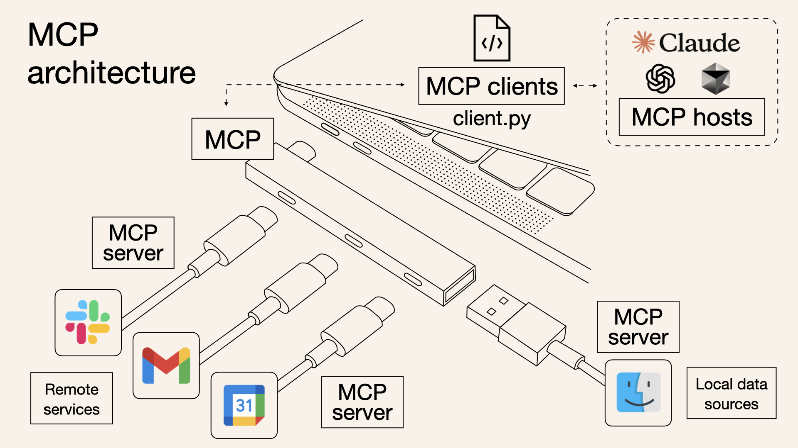

COURSE MAP
この講座の全体像
S1 / S2
Claude Code の基本
S3 / S4
業務効率化（Skills / MCP）
S5 / S6
アプリ開発（フロント / サーバー）
S1 / S2
Claude Code の基本

出典: anthropic.com/news/claude-design-anthropic-labs
S3 / S4
Skills / MCP

出典: norahsakal.com/blog/mcp-vs-api-model-context-protocol-explained
2
Claude Codeと対話しながら
自力で解決する